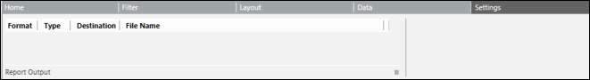
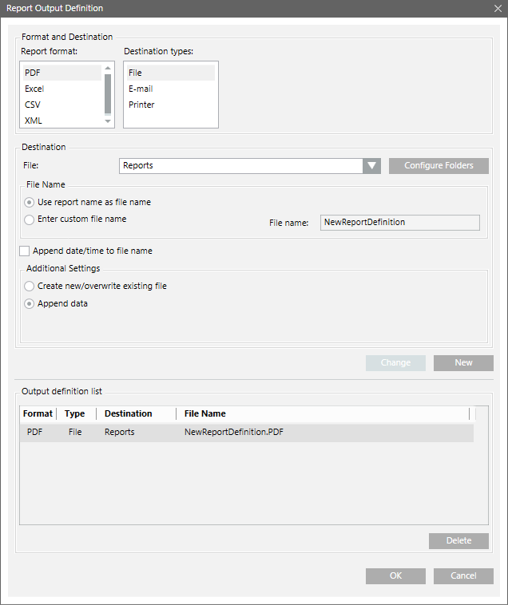

Settings Tab
The Settings tab allows you to configure the output format and destination for a Report Definition.
Report Output Group Box
The Report Output group box displays the configured entries for a Report Definition.

Clicking the Dialog Launcher displays the Report Output Definition dialog box that allows you to configure the report output settings.
displays the Report Output Definition dialog box that allows you to configure the report output settings.
The configured report output definitions are executed when the report definition runs automatically.

Report Output Definition Dialog Box Components | |
Field | Description |
Report format | Lists the following supported file formats. |
Destination types | Lists all the various destination types: File, Destination Type - Email and Printer.
|
Destination | Depending on the Destination types settings, you can configure the destination in one of the following ways:
|
Use report name as file name | Default option. Becomes available only when you select the destination type as File or E-mail. In this case, the File Name field is populated with the selected report name and is unavailable. |
Enter custom file name | When selected, allows you to type in the desired file name in the File Name text box. |
File name | If the file name contains special characters such as, / \ : * ? < > | “, then it is highlighted with a red border and a tool-tip displays the error message. |
Append date/time to file name | Becomes available only when you select the destination type as File or Email. When checked, adds the date and time to the file name. |
Create new/overwrite existing file | Default option. Allows you to configure a new file to the configured destination when routing reports. If the file does not exist, a new file is created, existing files are overwritten. |
Append data | Adds the currently executing report data to the existing file with the same file name and file type present at the destination. If there is no such file, a new file will be created. |
Change | Allows you to modify an existing Report Output Definition entry. |
Add | Adds a Report Output definition entry to the Output Definition list. |
Output Definition List | Displays the existing Report Output Definition entries. |
Delete | Deletes the selected Report Output Definition. |